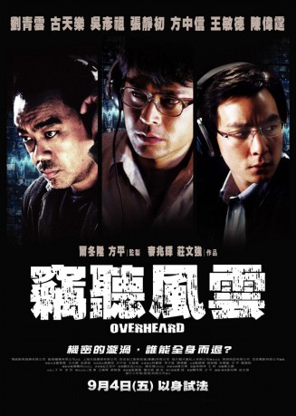

IMDB-Wertung: 7.1 / 10
IMDB-Wertung: 7.1 / 10  Metascore:
Metascore: 
A trio of police officers conduct surveillance on a listed company.
Alternativ: Overheard (Englischer Titel)
 IMDB-Wertung: 7.1 / 10 Metascore:
A trio of police officers conduct surveillance on a listed company.
Jahr: 2009
Dauer: 99 Minuten
FSK: 16
Land: Hong-Kong Studio: Koch MediaTonspuren: DTS - ,
Untertitel: Deutsch,
Auflösung: 1080p (1920x816) Größe: 6471 MB
Regisseur: Felix Chong, Alan Mak
Drehbuch: Alan Mak
Soundtrack: Kwong Wing Chan
Darsteller:
 Daniel Wu als Max
Daniel Wu als Max Jingchu Zhang als Mandy
Jingchu Zhang als Mandy Grace Huang als Jenny
Grace Huang als Jenny Louis Koo als Gene
Louis Koo als Gene Michael Wong als Will Ma
Michael Wong als Will Ma Waise Lee als Low
Waise Lee als LowDatei: X:\HD-Eastern-Modern(A-M)\Abgehört - Trau niemals einem Cop (2009, FSK16, 1920x816).mkv seit 27.07.2018
Festplatte: HD Eastern+Western
 Es gibt insgesamt 104 Filme in der Gruppe 'HD-Eastern-Modern(A-M)'
Es gibt insgesamt 104 Filme in der Gruppe 'HD-Eastern-Modern(A-M)'